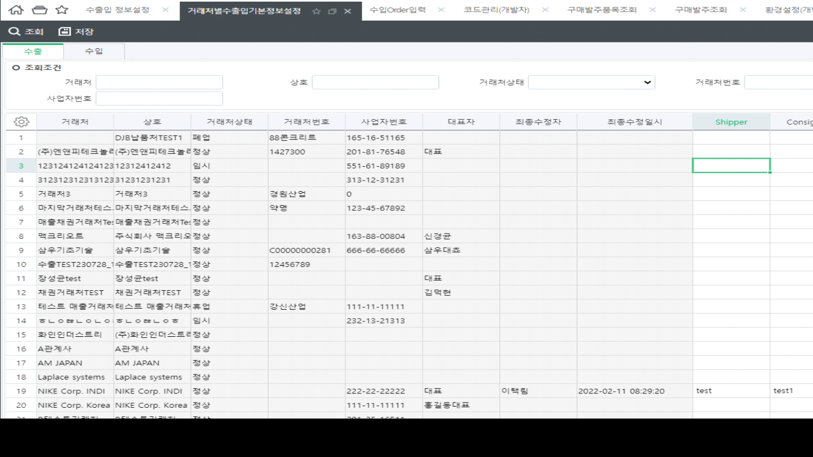
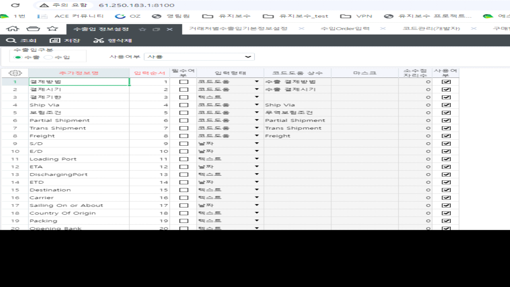

수출, 수입 추가정보정의
DECLARE @CompanySeq INT = 1
,@LanguageSeq INT = 1
,@DefineUnitSeq INT = 8212001 -- 수출 / 수입 = 8212002
SELECT -- A.Title,
CASE WHEN ISNULL(A.WordSeq,0) = 0 THEN ISNULL(A.Title, '') ELSE ISNULL(Dic.Word,'') END AS Title,
A.TitleSerl,
A.CodeHelpConst,
A.IsEss,
A.SMInputType AS SMInputType,
A.CodeHelpParams,
'',
A.MaskAndCaption,
A.QrySort,
A.IsCodeHelpTitle,
A.IsFix,
A.DecLen
FROM _TCOMUserDefine AS A WITH(NOLOCK)
LEFT OUTER JOIN _TCADictionary AS Dic WITH(NOLOCK) ON A.CompanySeq = @CompanySeq
AND Dic.LanguageSeq = @LanguageSeq
AND A.WordSeq = Dic.WordSeq
WHERE A.CompanySeq = @CompanySeq
AND A.TableName = '_TSLExpImpInfo'
AND A.DefineUnitSeq = @DefineUnitSeq
ORDER BY A.QrySort
거래처 기본정보 입력화면 : 거래처별수출입기본정보설정

화면명 : 수출입 정보설정
